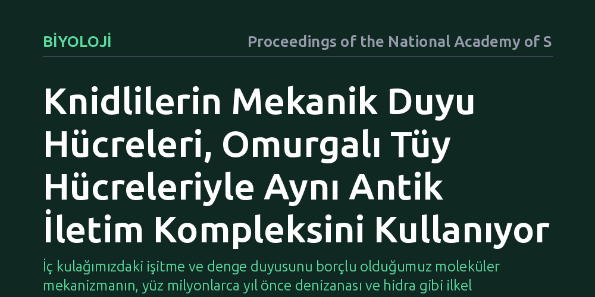

BIYOLOJI · Proceedings of the National Academy of Sciences · 2026-10-11
Araştırmacılar, omurgalılarda işitme ve dengeyi sağlayan tüy hücrelerinin evrimsel kökenini knidlilerin mekanik duyu hücrelerinde inceledi. Bulgular, bu ilkel canlıların algı hücrelerinin omurgalı tüy hücreleriyle ortak bir antik moleküler iletim kompleksini paylaştığını ve onların evrimsel öncülü olduğunu gösterdi.
İç kulağımızdaki işitme ve denge duyusunu borçlu olduğumuz moleküler mekanizmanın, yüz milyonlarca yıl önce denizanası ve hidra gibi ilkel canlılarda çoktan geliştiğini gösterir.

İnsanların ve diğer omurgalıların sesleri duyması ve dengede kalabilmesi, iç kulaktaki mikroskobik tüy hücrelerinin mekanik kuvvetleri algılaması sayesinde gerçekleşir. Ses dalgaları veya baş hareketleri bu tüy hücrelerini büktüğünde, hücre zarındaki özel kanallar açılarak fiziksel hareketi elektriksel sinyallere dönüştürür. Ancak bu hassas duyu mekanizmasının evrim ağacında ilk kez nerede ve nasıl ortaya çıktığı uzun süredir yanıt aranan temel sorulardan biridir.
Omurgasız hayvanların çoğu karmaşık kulak yapılarına sahip olmasa da çevrelerindeki fiziksel temasları ve su hareketlerini algılamak zorundadır. Özellikle denizanası, hidra ve deniz şakayığı gibi knidliler, avlanmak ve savunma yapmak için mekanik uyaranlara duyarlı özelleşmiş hücreler kullanır. Araştırmacılar, iç kulağımızdaki tüy hücrelerinin kökeninin bu ilkel canlıların mekanik algı sistemine uzanıp uzanmadığını belirlemeyi amaçladı.
Çalışmada, omurgalı tüy hücrelerinde mekanik kuvvetleri elektriksel sinyale dönüştüren kilit aktörler olan transmembran kanal benzeri (TMC) proteinlerine odaklanıldı. Omurgalılarda TMC1 ve TMC2 proteinleri, tüy demetlerinin uçlarında yer alarak işitme ve denge için gerekli mekanosensör kanal kompleksinin merkezini oluşturur. Bilim insanları, knidlilerin dokunma ve avlanma hücrelerinde de benzer bir moleküler altyapının bulunup bulunmadığını araştırdı.
Araştırma ekibi, knidli mekanosensör hücrelerindeki mekanik iletim bileşenlerini tespit etmek için moleküler hedefleme yöntemlerini ve hücresel biyoloji analizlerini kullandı. İyon kanallarının hücre zarı üzerindeki yerleşimi ve bu kanalların mekanik uyarılara verdiği yanıtlar, omurgalı tüy hücrelerinin bilinen işleyiş prensipleriyle doğrudan karşılaştırıldı.
Yapılan incelemeler, knidlilerin mekanik algı hücrelerinin omurgalılardaki iç kulak tüy hücreleriyle çarpıcı bir moleküler benzerlik sergilediğini ortaya koydu. Knidli hücrelerindeki mekanosensör mekanizmanın, omurgalı tüy hücrelerinde kuvvet algısını yöneten antik TMC protein kompleksini doğrudan hedeflediği belirlendi. Bu durum, fiziksel kuvveti algılayan kanal düzeneğinin yüz milyonlarca yıl önce ortak bir atada çoktan kurulduğunu gösterdi.
Elde edilen veriler, knidlilerin avlarını yakalamak için kullandığı mekanik duyu yapılarının tesadüfi bir benzerlikten ibaret olmadığını kanıtladı. Aksine, omurgalıların kulaklarındaki hassas mekanik dönüştürücüler ile knidlilerin temas algılayıcıları, aynı antik moleküler iletim çekirdeğini paylaşan akraba sistemlerdir.
Bu bulgu, işitme ve denge duyumuzun karmaşık omurgalı anatomisi ortaya çıkmadan çok önce var olan temel bir moleküler kalıptan türediğini gösteriyor. Evrim, sıfırdan yeni bir işitme mekanizması geliştirmek yerine, basit deniz canlılarının av yakalamak ve çevreyi hissetmek için kullandığı antik kanal sistemini alıp iç kulağın hassas tüy hücrelerine uyarlamıştır.
Çalışma, duyusal biyolojide tüy hücrelerinin kökenine dair uzun süredir devam eden tartışmalara moleküler bir açıklama getiriyor. Kulaklarımızda sesleri algılayan moleküler makineler, okyanuslarda yüz milyonlarca yıldır varlığını sürdüren antik bir duyu mirasının günümüzdeki devamıdır.